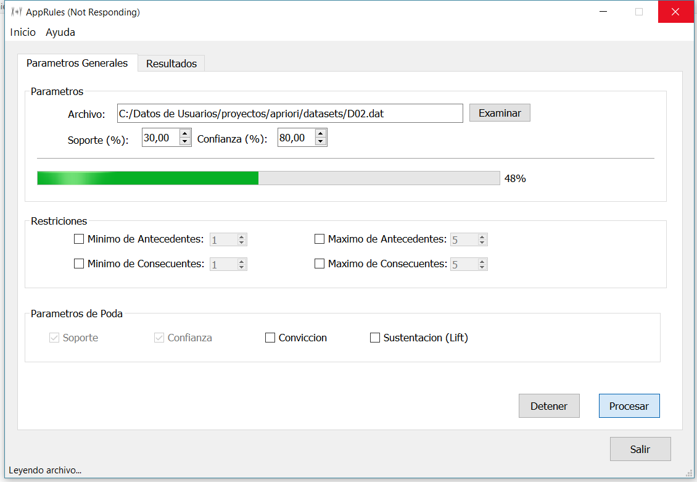
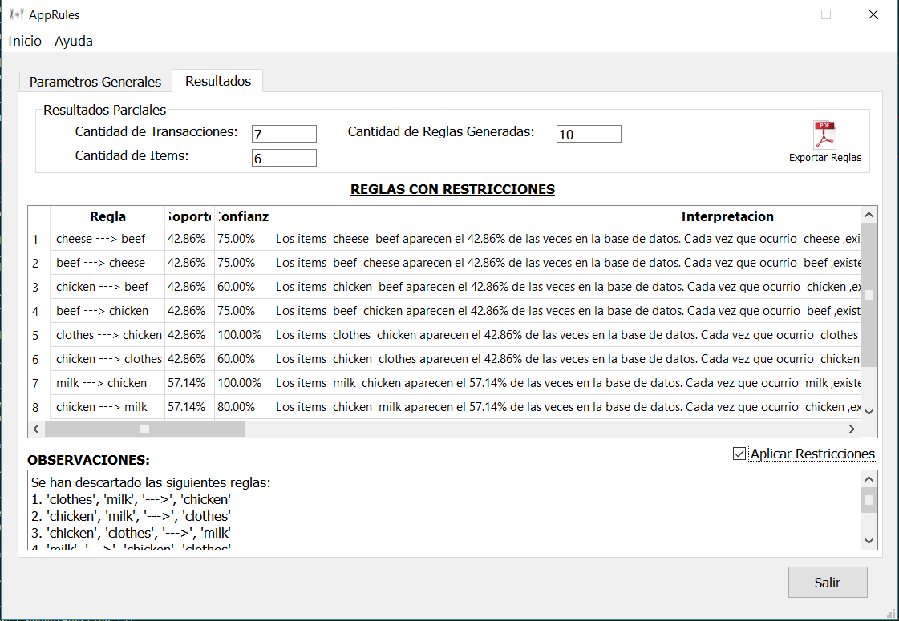

Acerca de AppRules
AppRules es una aplicacion para la obtencion de Reglas de Asociacion que corre sobre plataformas Linux y Windows. Fue desarrollado por Alumnos del 5to Nivel de Ingenieria en Sistemas de Informacion de la Universidad Tecnologica Nacional, para la materia de Inteligencia Artificial.
Las reglas de asociación relacionan una determinada conclusión (por ejemplo, la compra de un producto dado) con un conjunto de condiciones (por ejemplo, la compra de otros productos).
Por ejemplo la Regla:
carne leche ---> jamon | Soporte = 30 | confianza = 84%
indica que, a menudo, se da el caso de jamon cuando carne y leche ocurren al mismo tiempo. La regla es fiable en un 84 % y se aplica al 25 % de los datos (o 30 registros, suponiendo que en total existen 120 transacciones).
AppRules permite obtener las reglas de asociacion de un dataset de transacciones, para esto se implemento el Algoritmo Apriori de mineria de Datos.
Autores:
Docentes a cargo:
AppsRules esta desarrollado con Tecnologias OpenSource. Se utilizo Python en su version 2.7.13. Ademas se utilizaron:
AppRules esta diseñado para trabajar en en diferentes plataformas. Lo requisitos minimos para uso de la aplicacion son los siguientes:
A traves de AppRules se podra:
A continuacion se describiran las Instrucciones basicas de uso.
En la figura se muestra la pantalla de inicio de appRules.
Para empezar a utilizar la aplicacion debera cargar un dataset con transacciones, haciendo click en el boton Examinar
Nota: El dataset debera ser un archivo de texto plano donde cada transaccion se representara en una linea, y cada item debera ser separado por un espacio en blanco. Aclaracion: Esta nota es importante ya que de lo contrario no se consideran excepciones.
Adicionalmente se podran ingresar parametros de Restriciones:
Para correr el algoritmo solo basta que se ingrese el archivo con las transacciones y que se establezcan un valor de soporte y confianza Inicial.
El Soporte de una regla X--> Y es el porcentaje de ransacciones que contienen a X e Y. La regla de soporte determina cuan frecuentemente la regla es aplicable en un set de transacciones. El soporte es una medida util porque si es muy bajo, la regla podria ocurrir debido a la casualidad. Ademas, en un ambiente empresarial, una regla que cubre muy pocos casos (pocas transacciones) puede no sert util porque no crea sentido de negocio para actuar en tales reglas.
La confianza de una regla X --> Y es el porcentaje de transaciones que contienen X y ademas contienen Y. La confianza determina la previsibilidad de la regla. Si la confianza es muy baja, uno no puede inferir o predecir con fiabilidad Y desde X. Una regla con baja previsibilidad es de uso limitado.
Una vez cargado el dataset inicial, y establecido los parametros de Soporte y Confianza basta con seleccionar la Opcion de Procesar para obtener los primeros resultados.
Los primeros resultados seran visibles en la pestaña de Resultados, al cual se redireccionara una vez obtenido los mismo. En cualquier momento se podran cambiar los parametros Generales, basta con dirigirse a dicha pestaña y volver a procesar los resultados.
Para mejorar la calidad de las Reglas Generadas, se incorporaron un conjunto de Restricciones al algoritmo apriori:
Nota: Para la generacion de reglas cuando se establecen las restricciones de Sustentacion y Conviccion se considerar todas aquellas cuyos valores superar el valor de 1, en caso contrario dichas reglas sn descartadas.
Nota: Para la observacion de los resultados con las restricciones ingresadas, se debera seleccionar el Check de "Aplicar Restricciones", la cantidad de reglas disminuira de la Tabla con resultados y se mostrara en la leyenda de observaciones aquellas reglas descartadas.
Adicionalmente en la columna de Interpretacion se visualizara una descripcion con el significado de las reglas generadas.
Finalmente se podra hacer una exportacion a PDF de las reglas generadas utilizando el algortmo apriori tradicional. Para esto debera hacer click en el icono con la Imagen PDF, automaticamente se abrira el archivo, en el caso de que no lo haga podra verlo en la carpeta raiz del programa con el nombre de: informeAppRules